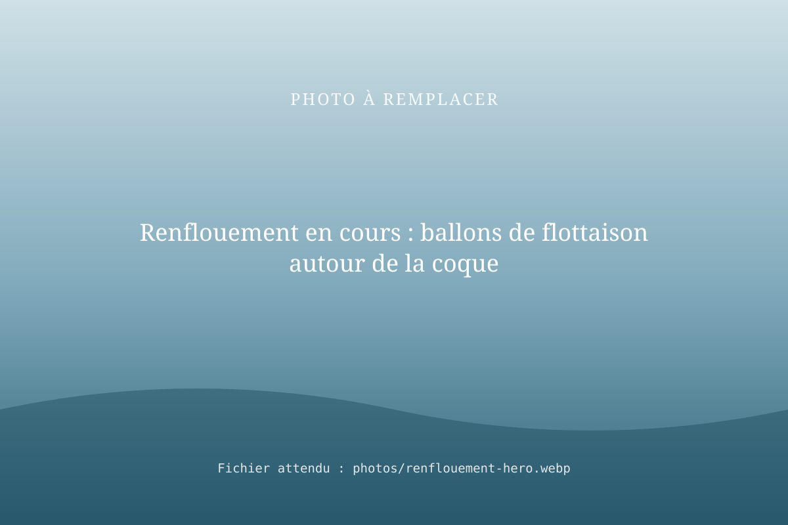
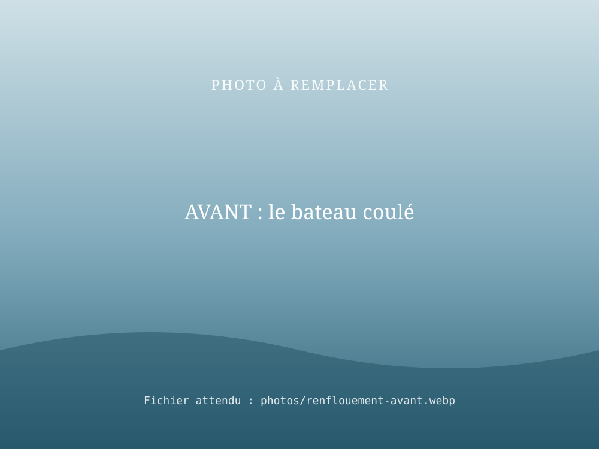
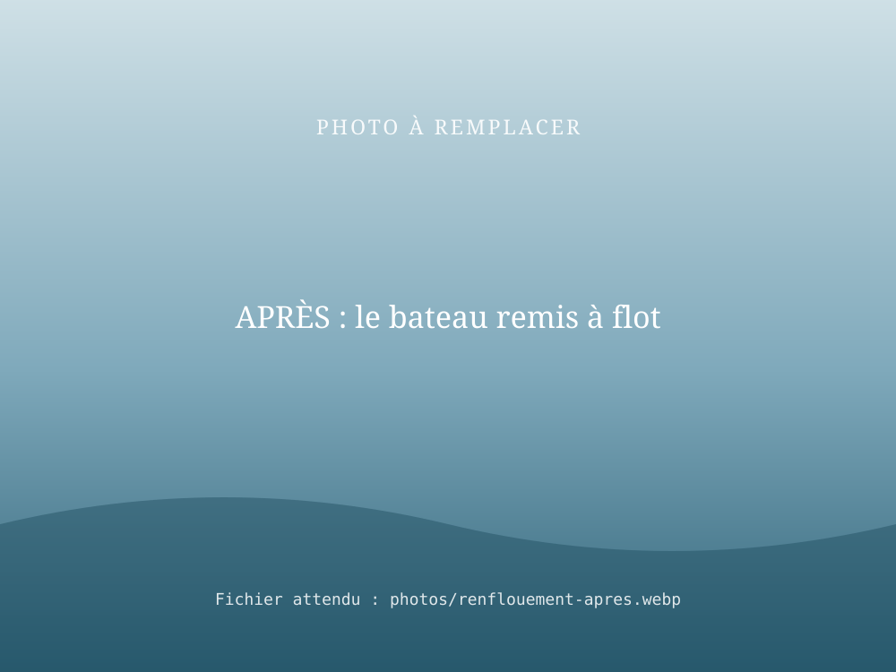

Renflouement de bateau : remettre à flot ce qui a coulé
RivesEnRêves a déjà renfloué un bateau à l'aide de ballons de flottaison. Si votre bateau a coulé ou s'enfonce, nous étudions la situation, organisons la remise à flot et la suite : convoyage vers un chantier ou déconstruction.

Notre référence : un renflouement aux ballons de flottaison
Une opération technique menée de bout en bout par RivesEnRêves.


- Diagnostic
Position du bateau, profondeur, accès, risques de pollution.
- Préparation
Choix et placement des ballons de flottaison, coordination avec le gestionnaire du site.
- Remise à flot
Gonflage progressif et contrôlé jusqu'au retour en surface.
- Mise en sécurité
Pompage, amarrage, puis convoyage ou déconstruction selon l'état.
Et après le renflouement ?
Un bateau renfloué a deux destins possibles. S'il est réparable, nous pouvons le convoyer jusqu'à un chantier, démarches comprises. S'il ne l'est pas, nous réalisons sa découpe et son évacuation.
Questions fréquentes
Comment renfloue-t-on un bateau coulé ?
Une méthode éprouvée consiste à fixer des ballons de flottaison au bateau puis à les gonfler progressivement pour le ramener en surface, avant de l'écoper et de le mettre en sécurité. C'est la technique que RivesEnRêves a déjà mise en œuvre.
Que faire en premier quand son bateau coule ?
Assurez la sécurité des personnes, prévenez le gestionnaire du port ou de la voie d'eau et votre assureur, limitez si possible la pollution, puis contactez un intervenant capable de renflouer le bateau.
Un bateau renfloué peut-il naviguer à nouveau ?
Cela dépend des dégâts, notamment sur le moteur et l'électricité. Après le renflouement, le bateau peut être convoyé vers un chantier pour diagnostic, ou découpé s'il n'est pas réparable.
Votre bateau a coulé ?
Décrivez la situation (lieu, type de bateau, profondeur estimée, photos si possible) : nous revenons vers vous rapidement.